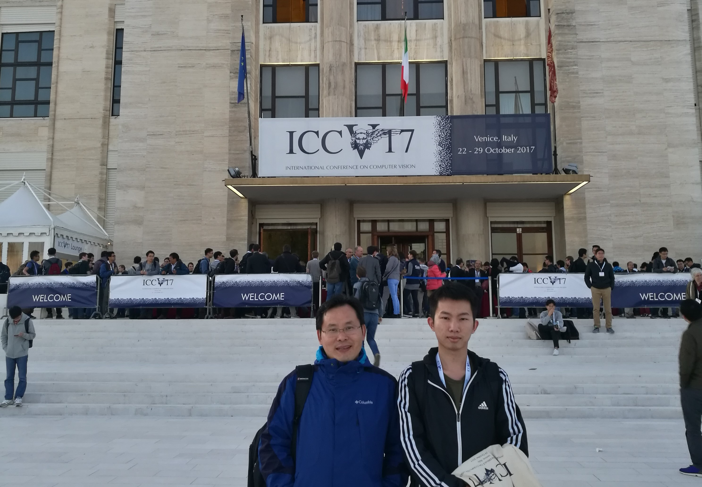
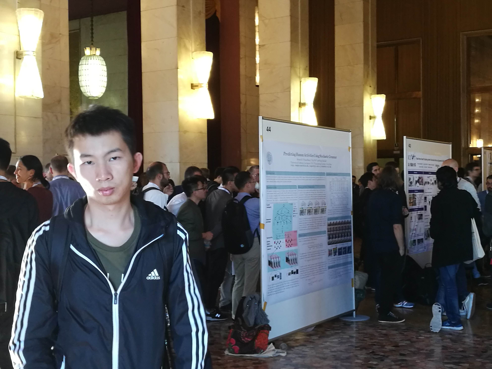

当地时间10月22日，2017年计算机视觉国际顶级会议International Conference on Computer Vision(ICCV)在意大利威尼斯开幕，我实验室硕士生杨骏锋以第一作者身份参加此次会议。这也是我实验室第二次派出硕士生以第一作者身份参加计算机视觉方向的顶级会议， 标志着我实验室创新型人才的培养迈入新高度。

据了解，国际计算机视觉大会（ICCV）全称是IEEE International Conference on Computer Vision，由IEEE主办，与计算机视觉模式识别会议（CVPR）和欧洲计算机视觉会议（ECCV）并称计算机视觉方向的三大顶级会议。不同于在美国每年召开一次的计算机视觉模式识别会议（CVPR）和只在欧洲召开的欧洲计算机视觉会议（ECCV），ICCV在世界范围内每两年召开一次，其重要程度可见一斑。ICCV论文录用率非常低，是三大会议中公认级别最高的 。
杨骏锋系我校信息科学与技术学院通信工程系智能数据分析与处理实验室2015级硕士生，他与实验室2014级博士生傅雪阳合作完成的 获奖论文为“PanNet:A deep network architecture for pan-sharpening”。该论文在超分辨率贝叶斯法方面的发展起到了新助兴的作用。该论文的完成，得到了丁兴号教授的悉心指导。
我实验室旨在培养研究生创新能力和探索学习能力，充分调动与激发研究生发展自我能力的积极性、主动性和创造性，引导和帮助同学们把学校提高研究生综合素质和创新能力的要求内化为自身的自觉行为，努力提高人才培养质量。此次硕士生杨骏锋以第一作者身份参与顶级计算机视觉会议，标志着我实验室作为研究生培养单位的教育培养质量提高，在研究生综合素质的培养上，取得了显著的成效。
